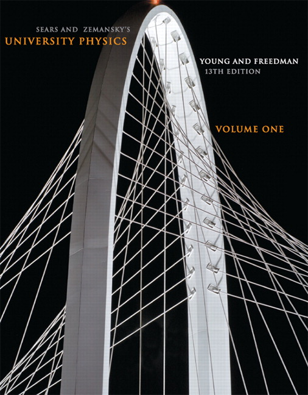

Ballistic pendulum Ballistic pendulum |
 Jumping on a scale Jumping on a scale |
 Projectile motion Projectile motion |
 Ropes and pulleys Ropes and pulleys |
 Banking car Banking car |
 Water rocket Water rocket |
 Hallway problem Hallway problem |
 Double pendulum Double pendulum |
 Small ball and super ball Small ball and super ball |
 Tetrahedrons Tetrahedrons |
 Crazy ropes Crazy ropes |
|
Note: Some discussions here assume that you are familiar with high-school calculus. These things are marked with a [C].
HyperPhysics, the high-school physics quick-reference Bible.
Physics Stack Exchange is a clean, efficient forum whose users are dedicated (just look at the vectorized diagrams some users spend time creating!) and knowledgeable (most high-school physics students will not be able to understand half the questions asked).
Physics Forums is similar, but my impression is that it is more receptive to homework-help threads than Stack Exchange is.
Print:I've only seen a few, but here are some impressions:
Young and Freedman's University Physics is comprehensive but also inundated with distracting, "user-friendly" graphics and rather dry explanations in small print. The numerous exercises help one become comfortable with applying the basic formulas, but are mostly straightforward and uncreative. It's a good complement to the classroom but probably impossible to self-study with.

Affectionately known as K&K, Kleppner and Kolenkow's An Introduction to Mechanics is a lovely text for advanced high-schoolers. The explanations are clear and concise, the layout is minimalist, and, best of all, the problems are challenging but well designed.

Morin's Introduction to Classical Mechanics is written in a more casual style than K&K, but it's problems are even more difficult. Most are probably impossible for the average AP Physics C student; I've heard several complain that some problems require a particular "trick" that isn't very useful to know. Nonetheless, they're a good mental workout. In fact, I wish to acknowledge this and K&K as the inspirations for many of the curious physical scenarios discussed on this site.
The Feynman Lectures are a great read (Feynman videos are wonderful as well). You can feel Feynman's enthusiasm through the pages, though it must be noted that the Lectures are better for learning concepts intuitively than for specific problem-solving practice. There is, however, a set of fun exercises on the Feynman website.